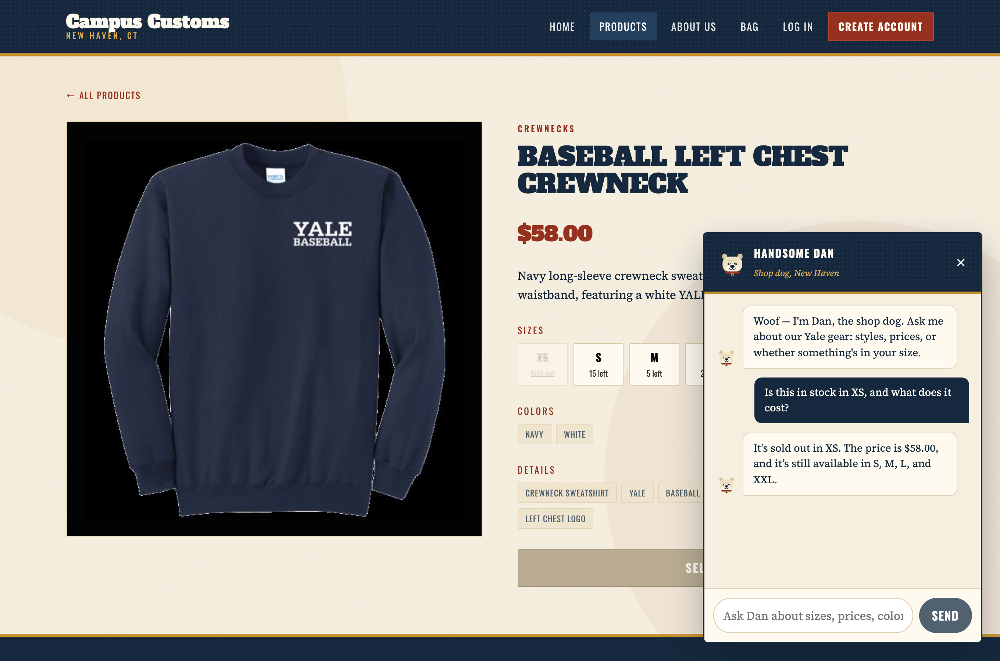
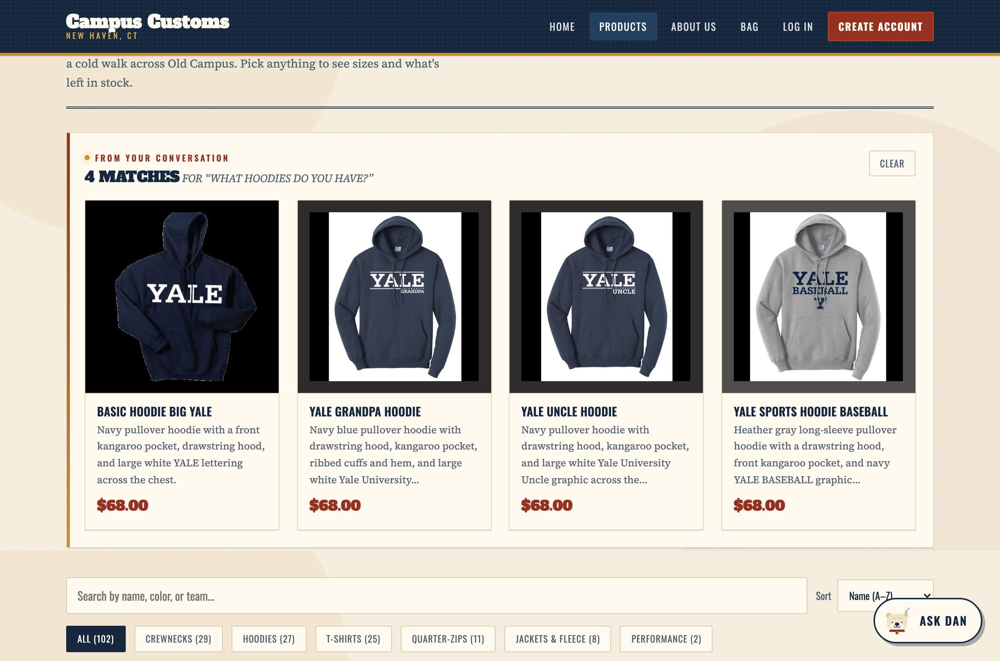
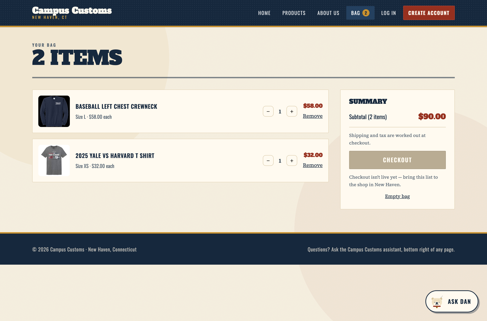

Scripted browser session against the live app; no screenshots were staged or edited.
Signed in?
No — all three checks were run as a guest, so nothing depends on a saved session.
Check 1. Chat reports real stock and price from the database
Passed
Asked Dan, from the product's own page: “Is this in stock in XS, and what does it cost?”

Dan answers “It's sold out in XS. The price is $58.00, and it's still available in
S, M, L, and XXL.” — which matches the database exactly (XS = 0,
XL = 0, price = 58.00). The page behind it independently shows the same
thing: XS struck through as sold out, and $58.00 in the heading. This proves the assistant
is reading live inventory rather than guessing or inventing a number.
Check 2. A category question puts matching product cards on the page
Passed
Asked Dan, from the Home page: “What hoodies do you have?”

The question was asked on the Home page; the site moved to the catalogue and rendered
“4 matches for ‘What hoodies do you have?’” as real product cards — image,
name, short description, and price. All four are genuine $68.00 hoodies from the database.
The cards are the same component the catalogue uses, so each one opens the full product page
when clicked.
Check 3. Usability feature from Problem 9 — the shopping bag
Passed
Added two different items, in two different sizes, from two product pages.

“Add to bag” was a dead button before Problem 9. The bag now holds items
per size (L crewneck, XS t-shirt), shows a live count in the nav, and totals
correctly: $58.00 + $32.00 = $90.00. Quantities are capped at real stock, and
the bag is saved to the browser so it survives a reload. Checkout is deliberately disabled —
there is no orders table in this assignment, and a button that pretended to take payment
would be dishonest.